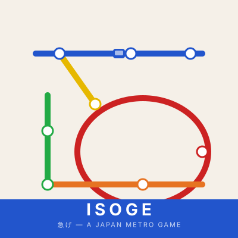

Advanced Game Design — Racing Game
ISOGE 急げ
急/I-SO-GE/ — the imperative form of ISOGU (急ぐ), meaning "to hurry"
Format: Analog racing game, wall-mounted poster board | Players: 4 | Solo project

ISOGE is a Japan metro racing game played on a large printed poster mounted to the wall. Players are transiters — commuters racing across a stylized map of Japan, moving magnetic train tokens between stations, completing route cards, and managing a shared network of five color-coded lines. First to 30 points wins, but the round finishes and every player is penalized for incomplete routes.
Where It Came From
ISOGE is personal. Living in Tokyo, the train was the backbone of daily life — a system of intersecting lines, color-coded and memorized, where every commuter has a route and everyone is perpetually in a hurry. That rhythm of movement, planning, and interference became the core of the game.
The Board
The game board is a custom-designed poster printed and mounted to the wall for play. Twelve stations span a stylized map of Japan — 墨田区, 神宮前, 東京, 原宿, 浅草, 奈良, 渋谷, 京都, 大阪, 富士山, 山梨 — connected by five colored lines. Japanese landmark illustrations (Tokyo Tower, Senso-ji, Mt. Fuji, Himeji Castle) fill the map alongside the line network. Score trackers for each player run along the right side, with 30 circled as the target.
Magnetic train tokens sit directly on the poster. Moving them along the wall-mounted board gives the game a physical presence that tabletop games rarely have.
Core Rules (Directory)
Transiters roll 2 dice and move their train to the corresponding station. The results also set turn order for the round — lowest goes first. A clean dual-purpose roll that starts the game with immediate positioning tension.
Each transiter draws 5 route cards from the shuffled deck and may discard as many as they like before play begins. Routes define which stations you need to connect — and unfinished routes cost you points at game end.
Each turn is a binary choice: Roll 1 die and move by half the result (rounded down) along the network — no reversing mid-turn, all moves must be used. Or draw any number of route cards and discard up to 2. The draw action lets you manage your hand without moving, but burns a turn.
The first transiter to 30 points ends the game after the full round finishes. Then all players subtract their unfinished routes from their total. The highest score after penalties wins — so rushing to 30 without finishing your routes can lose you the game.
Advanced Rules (Advisory)
- 1 Special routes — 10 line routes are worth 10 points each, but must be completed in full without any deviation. High risk, high reward.
- 2 Crowded stations — landing on an occupied station bumps the previous occupant back to the last numbered station they passed through. Numbered stations are safe — a spatial safety net that makes positioning meaningful.
- 3 Efficient transit — transferring between lines (when the station color changes) earns 1 point. Transfers don't award points past 29, preventing a shortcut to game end.
- 4 Price hike — the first time any player hits 10 and 20 points, they roll a die and price-hike the corresponding line. All transiters must pay 2 points to transfer onto that line from then on. This mechanic introduces real-time economic friction — the leader actively makes the network more expensive for everyone.
- 5 Multiple routes — transiters may complete multiple routes simultaneously, as long as they held those route cards when they started moving. A single path can score two routes at once if planned correctly.
Design Highlights
The Price Hike mechanic is the game's sharpest edge. At exactly the moments when a player is succeeding (hitting 10 and 20 points), they introduce an economic cost to part of the network. The leader gets a tool to slow others down, but the specific line is random — they can't target directly. It keeps the leader from feeling untouchable while avoiding pure spite mechanics.
The penalty-at-game-end structure means the race to 30 isn't straightforward. Holding incomplete routes punishes overcommitting — so the player who manages their hand best, not just the fastest mover, tends to win. This mirrors how the real Tokyo metro works: knowing when to switch trains, when to stay put, and when to commit to a longer route is half the skill.
Playing on the wall was a deliberate physical design choice. Metro maps are public infrastructure — they live on station walls, not tabletops. Mounting the board vertically gives all players an equal view, makes the spatial layout intuitive, and makes the game feel like the thing it's about.
Playtesting
ISOGE was playtested across multiple sessions and received positive feedback. Key iteration areas included tuning the movement dice fraction (dividing by 2 and rounding down), calibrating the 30-point target against average route values, and balancing the Price Hike timing so it created tension without feeling punishing too early.
Physical Production
ISOGE was produced as a high-quality physical game using the Harvey Mudd Makerspace and Scripps Fab Lab. The board is a large-format poster printed at full resolution and wall-mounted for play. Train tokens are custom magnetic pieces that cling directly to the board. Route cards, the Advisory, and the Directory reference cards were printed, cut, and finished by hand. The final product functions as both a playable game and a graphic design artifact — the poster is designed to be read as a transit map even when not in play.
Skills & Tools
- Adobe Illustrator — full board design, metro line layout, station iconography, route card layout, score tracker design, and the Advisory and Directory reference cards
- Adobe Photoshop — landmark illustrations and poster composition for large-format print
- Large-format print production — designing for wall-mounted poster dimensions, managing bleed and resolution for physical output
- Magnetic component fabrication — train tokens designed and produced as magnetic pieces for wall-mounted play
- Racing game systems design — building a point-race with meaningful catch-up mechanics (Price Hike), hand management tension (route penalties), and spatial positioning (crowded stations)
- Playtesting and iteration — multiple sessions refining movement values, point thresholds, and the Price Hike timing